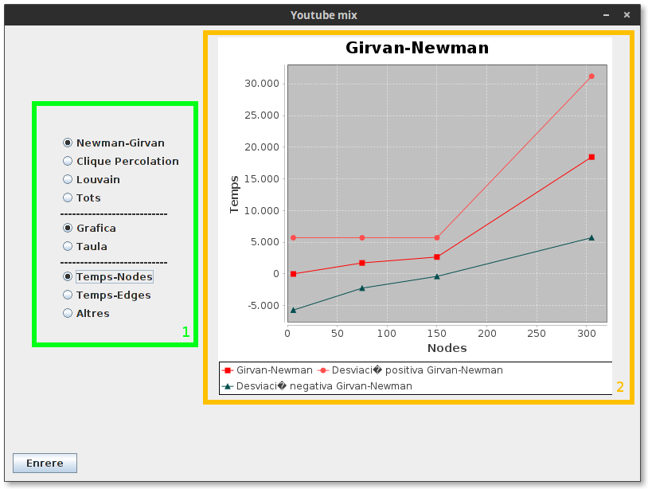

Consultar les estadistiques¶
En aquest apartat es poden consultar les estadistiques dels diferents algorismes. Es pot accedir pulsant “Estadistiques” a la finestra principal.
Descripció de la interficie¶
- Selector del tipus d’estadistica: Usant aquest selector, podem triar quina de les estadistiques volem consultar. Es poden veure estadistiques concretes de cada algorisme o la comparativa entre els tres algorismes disponibles. També es pot seleccionar veure la estadística en vorma de gràfica o consultar els valors en forma de taula.
- Visualitzador de dades: Aquí es mostren les dades que haguem seleccionat en el selector (1). Consultar l’apartat “Exportant les gràfiques com a imatge” per mes informació sobre les altres funcionalitats.
Exportant les gràfiques com a imatge¶
Si es desitja desar una gràfica en concret, es pot desar en forma d’imatge per consultarla mes endavant un cop hagi sigut modificada.
Si es fa click amb el botó dret sobre la gràfica tindrem la opció de desarla com a .png, .pdf o en format vectorial. Addicionalment, seleccionant “preferencies” podem editar la gràfica per tal de deixarla al nostre gust abans de desarla com a imatge.